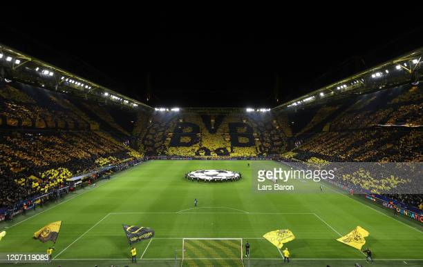

Borussia Dortmund a Muralha Amarela
O clube foi fundado em 1909 por dezoito jogadores de futebol de Dortmund, o departamento de futebol faz parte de um grande clube esportivo com mais de 145.000 membros, o que faz do BVB o segundo maior clube esportivo da Alemanha.
O Borussia Dortmund venceu oito campeonatos alemães, sete DFB-Pokals, seis DFL-Supercups, uma Liga dos Campeões, uma Taça dos Clubes Vencedores de Taças e uma Copa Intercontinental. A conquista da Taça dos Clubes Vencedores de Taças em 1966 fez deles o primeiro clube alemão a conquistar um título europeu.

Em 2021 bomba é encontrada perto do estádio do Borussia Dortmund
A bomba pesava cerca de 250kg e foi fabricada na época da Segunda Guerra Mundial. Apesar de ser antiga, ela poderia causar um acidente drástico e, por isso, tinha que ser removida com segurança pelos profissionais. "O Signal Iduna Park teve que ser evacuado por causa de uma necessária eliminação de bomba no estádio Rote Erde", informou um diretor do Dortmund, Christian Hockenjos, à agência SID. De acordo com a imprensa local, o material foi desarmado com sucesso. Apesar do susto, não é a primeira vez que um artefato do tipo é encontrado pelo Borussia Dormund. Em 2015, outra bomba da Segunda Guerra Mundial foi achada em uma área do clube. Daquela vez, estava na zona VIP da tribuna oeste do Signal Iduna Park, a uma profundidade de cinco metros.